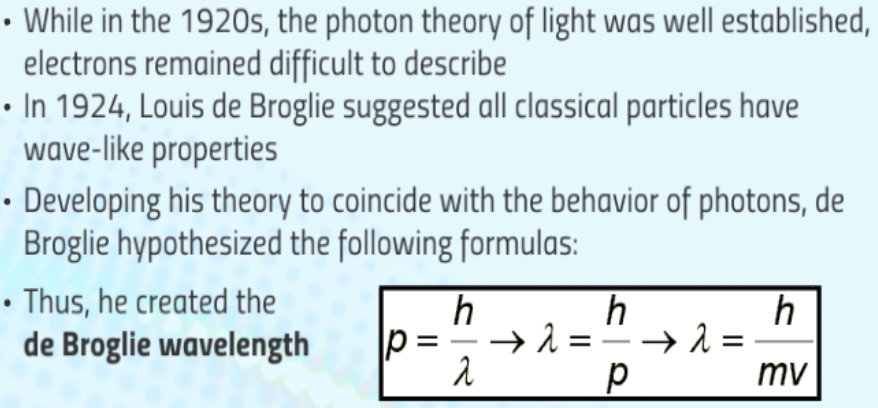
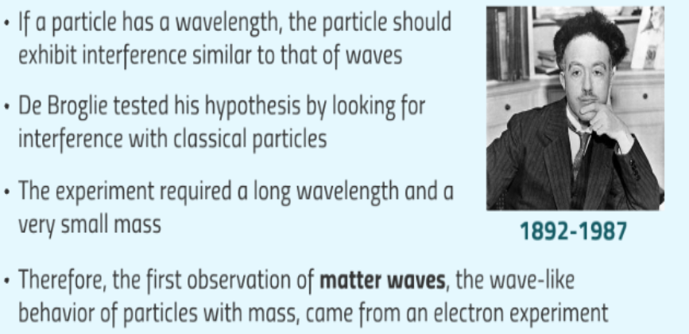
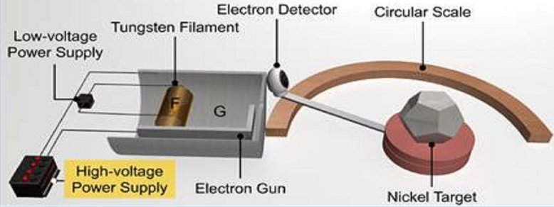
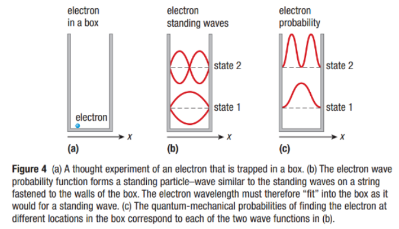
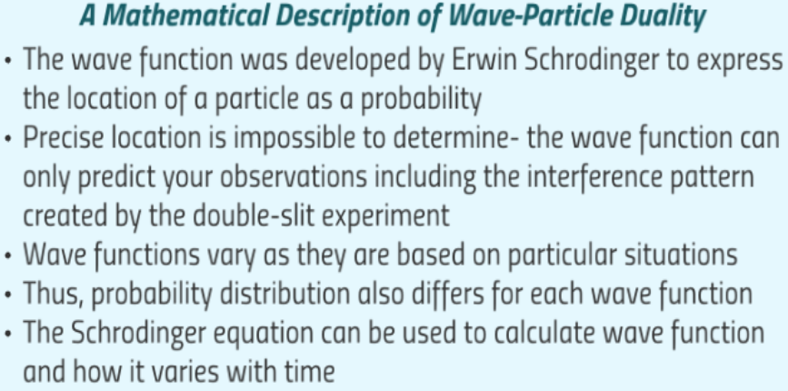
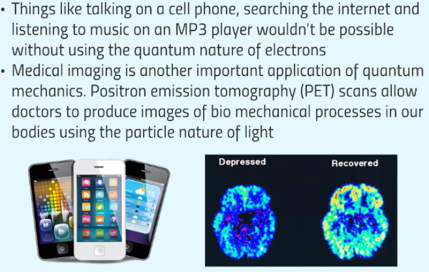

Wave Properties of Classical Particles


The Electron Double-Slit Experiment
Illustrates the wave nature of light.
When light is aimed at the 1st screen, many interference fringes develop across the 2nd screen.
The slits diffract the light and the fringes mark the interference of the light waves.
Davisson-Germer Experiment
In 1927, Clinton Davisson & Lester Germer experimented by aiming a beam of electrons at a crystal target.
The experiment certified that electrons display the wave-like property of interference with a wavelength.


Sample Problem #1
Determining the Wavelength of Electron


Watch this video:
Practice

Interpreting the Double Slit Experiment
The equations of quantum mechanics do not explain what happens to a single electron during a double-slit experiment.
Different interpretations of the equations try to answer the question.
Collapse Interpretation
The electron may behave sometimes as a wave and sometimes as a particle, but always one or the other.

Pilot-wave Interpretation
Avoids an unexplained collapse, but it states that the motion of the electron depends on a pilot wave.

Many Worlds Interpretation
This method also doesn't include a collapse on the screen or any mysterious pilot wave. The universe splits into many versions of itself in this interpretation.
When the electrons reach the slit, the entire universe splits into two, in one version the electron passes through the left slit, and in the other version the electron passes through the other slit.
Developed by Neil Bohr in 1920. Deals directly with the results of measurements made and what you can see or observe, doesn't contain theoretical ideas.
This interpretation basically states that some questions have no answers, such as how the electrons behave as they travel to the screen. This view was most dominant throughout the 20th century.
The Wave Function


The Heisenberg Uncertainty Principle

Application of Quantum World

